卡坦岛
Catan · 官方中文规则书全文转录(遊戲規則繁体＋玩家手冊简体)
本页整理自微信公众号「无忧桌游」《卡坦岛 Catan》发布的《卡坦：基礎》(CATAN 基础游戏，Klaus Teuber 设计，KOSMOS 出版，栢龍玩具發行)官方中文规则书扫描件，含三部分：①「遊戲說明」單張（繁体印制，含遊戲概覽❶–❿與初學者設置圖）；②「遊戲規則」冊第 2–4 頁（繁体印制，第 1 頁未见于该文）；③「玩家手冊」(详细说明及卡坦游戏范例 / Almanac)第 1、4–12 頁（简体印制，第 2–3 页「卡坦 系列简介」未见于该文）。繁体、简体均按原书照录、未作繁简转换，原书扫描图随文嵌入——点击任意图片即可放大查看。规则内容归 KOSMOS、CATAN GmbH、栢龍玩具及版权方所有，转录仅供个人学习查阅。
整理说明：〔?〕为扫描件上无法辨认之处——各發展牌/進程牌/分數牌及「最長道路」「最大軍隊」卡面印刷小字低于扫描分辨率；玩家手冊第 6 頁本土貿易對話範例行尾 5 字在原扫描件上即淡墨；工作人員頁栢龍玩具网址末字符被页面边缘裁切。本玩家手冊将矿石资源译作「铁」，照录。组件清单自洽：资源牌 95＝19 板块×5 种、发展牌 25＝14 骑士＋6 进程＋5 分数、建筑 16 城市＋20 村落＋60 道路＝4 人×(4＋5＋15)、数字圆片 18（「2」「12」各 1 枚，其余各 2 枚）。〔图 …〕说明与个别小节标题为整理所拟。
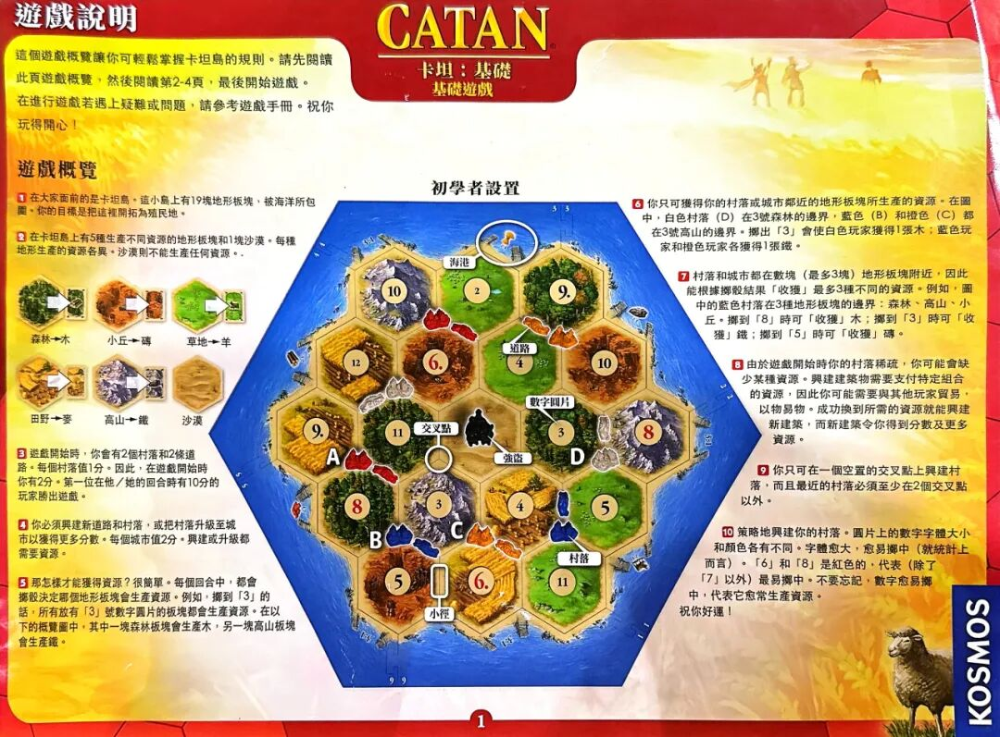
# 遊戲說明
CATAN
卡坦:基礎
基礎遊戲
這個遊戲概覽讓你可輕鬆掌握卡坦島的規則。請先閱讀此頁遊戲概覽,然後閱讀第2-4頁,最後開始遊戲。
在進行遊戲若遇上疑難或問題,請參考遊戲手冊。祝你玩得開心!
遊戲概覽
❶ 在大家面前的是卡坦島。這小島上有19塊地形板塊,被海洋所包圍。你的目標是把這裡開拓為殖民地。
❷ 在卡坦島上有5種生產不同資源的地形板塊和1塊沙漠。每種地形生產的資源各異。沙漠則不能生產任何資源。
森林→木
小丘→磚
草地→羊
田野→麥
高山→鐵
沙漠
❸ 遊戲開始時,你會有2個村落和2條道路。每個村落值1分。因此,在遊戲開始時你有2分。第一位在他/她的回合時有10分的玩家勝出遊戲。
❹ 你必須興建新道路和村落,或把村落升級至城市以獲得更多分數。每個城市值2分。興建或升級都需要資源。
❺ 那怎樣才能獲得資源?很簡單。每個回合中,都會擲骰決定哪個地形板塊會生產資源。例如,擲到「3」的話,所有放有「3」號數字圓片的板塊都會生產資源。在以下的概覽圖中,其中一塊森林板塊會生產木,另一塊高山板塊會生產鐵。
【初學者設置圖】圖題:初學者設置
圖內標注:海港、道路、數字圓片、交叉點、強盜、村落、小徑
標記字母:A、B、C、D
數字圓片(依地形,由上至下):
高山10|草地2|森林9.
田野12|小丘6.|草地4|小丘10
田野9.|森林11|沙漠(強盜)|森林3|高山8
森林8|高山3|田野4|草地5
小丘5|田野6.|草地11
❻ 你只可獲得你的村落或城市鄰近的地形板塊所生產的資源。在圖中,白色村落(D)在3號森林的邊界,藍色(B)和橙色(C)都在3號高山的邊界。擲出「3」會使白色玩家獲得1張木;藍色玩家和橙色玩家各獲得1張鐵。
❼ 村落和城市都在數塊(最多3塊)地形板塊附近,因此能根據擲骰結果「收穫」最多3種不同的資源。例如,圖中的藍色村落在3種地形板塊的邊界:森林、高山、小丘。擲到「8」時可「收穫」木;擲到「3」時可「收穫」鐵;擲到「5」時可「收穫」磚。
❽ 由於遊戲開始時你的村落稀疏,你可能會缺少某種資源。興建建築物需要支付特定組合的資源,因此你可能需要與其他玩家貿易,以物易物。成功換到所需的資源就能興建新建築,而新建築令你得到分數及更多資源。
❾ 你只可在一個空置的交叉點上興建村落,而且最近的村落必須至少在2個交叉點以外。
❿ 策略地興建你的村落。圓片上的數字字體大小和顏色各有不同。字體愈大,愈易擲中(就統計上而言)。「6」和「8」是紅色的,代表(除了「7」以外)最易擲中。不要忘記,數字愈易擲中,代表它愈常生產資源。
祝你好運!
〔1〕
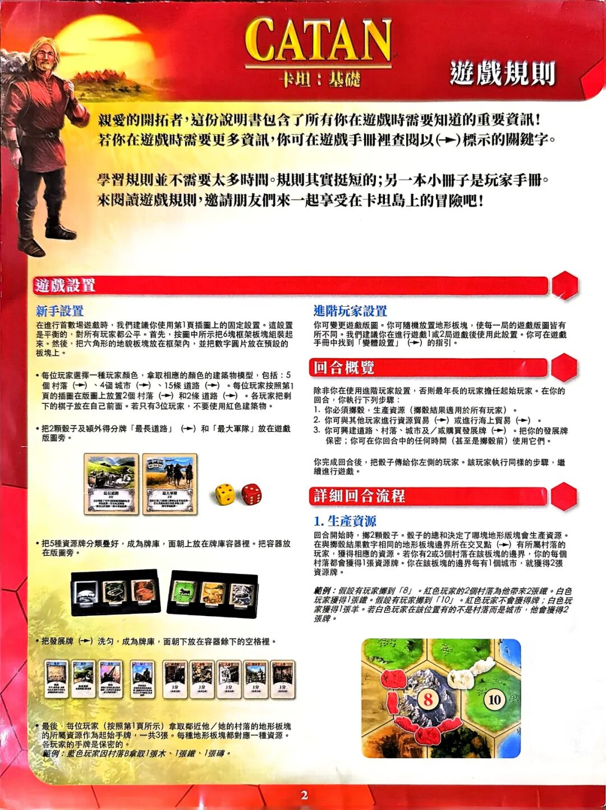
# 遊戲規則
CATAN
卡坦:基礎
親愛的開拓者,這份說明書包含了所有你在遊戲時需要知道的重要資訊!
若你在遊戲時需要更多資訊,你可在遊戲手冊裡查閱以(→)標示的關鍵字。
學習規則並不需要太多時間。規則其實挺短的;另一本小冊子是玩家手冊。
來閱讀遊戲規則,邀請朋友們來一起享受在卡坦島上的冒險吧!
遊戲設置
新手設置
在進行首數場遊戲時,我們建議你使用第1頁插圖上的固定設置。這設置是平衡的,對所有玩家都公平。首先,按圖中所示把6塊框架板塊組裝起來。然後,把六角形的地貌板塊放在框架內,並把數字圓片放在預設的板塊上。
- 每位玩家選擇一種玩家顏色,拿取相應的顏色的建築物模型,包括:5個 村落(→)、4個 城市(→)、15條 道路(→)。每位玩家按照第1頁的插圖在版圖上放置2個 村落(→)和2條 道路(→)。各玩家把剩下的棋子放在自己前面。若只有3位玩家,不要使用紅色建築物。
- 把2顆骰子及額外得分牌「最長道路」(→)和「最大軍隊」放在遊戲版圖旁。
【插圖】「最長道路」牌(2分)、「最大軍隊」牌(2分)與黃、紅兩顆骰子;牌面說明文字〔?……?〕
- 把5種資源牌分類疊好,成為牌庫,面朝上放在牌庫容器裡。把容器放在版圖旁。
- 把發展牌(→)洗勻,成為牌庫,面朝下放在容器餘下的空格裡。
【插圖】9張發展牌;其中右側5張牌面可見「1分」,其餘牌面文字〔?……?〕
- 最後,每位玩家(按照第1頁所示)拿取鄰近他/她的村落的地形板塊的所屬資源作為起始手牌,一共3張。每種地形板塊都對應一種資源。各玩家的手牌是保密的。
範例:藍色玩家因村落B拿取1張木、1張鐵、1張磚。
進階玩家設置
你可變更遊戲版圖。你可隨機放置地形板塊,使每一局的遊戲版圖皆有所不同。我們建議你在進行遊戲1或2局遊戲後使用此設置。你可在遊戲手冊中找到「變體設置」(→)的指引。
回合概覽
除非你在使用進階玩家設置,否則最年長的玩家擔任起始玩家。在你的回合,你執行下列步驟:
1. 你必須擲骰,生產資源(擲骰結果適用於所有玩家)。
2. 你可與其他玩家進行資源貿易(→)或進行海上貿易(→)。
3. 你可興建道路、村落、城市及/或購買發展牌(→)。把你的發展牌保密;你可在你回合中的任何時間(甚至是擲骰前)使用它們。
你完成回合後,把骰子傳給你左側的玩家。該玩家執行同樣的步驟,繼續進行遊戲。
詳細回合流程
1. 生產資源
回合開始時,擲2顆骰子。骰子的總和決定了哪塊地形板塊會生產資源。在與擲骰結果數字相同的地形板塊邊界所在交叉點(→)有所屬村落的玩家,獲得相應的資源。若你有2或3個村落在該板塊的邊界,你的每個村落都會獲得1張資源牌。你在該板塊的邊界每有1個城市,就獲得2張資源牌。
範例:假設有玩家擲到「8」。紅色玩家的2個村落為他帶來2張鐵。白色玩家獲得1張鐵。假設有玩家擲到「10」。紅色玩家不會獲得牌;白色玩家獲得1張羊。若白色玩家在該位置有的不是村落而是城市,他會獲得2張牌。
【例圖】高山板塊上放紅色數字圓片「8」;其右為草地板塊,數字圓片「10」;圖示紅色玩家與白色玩家的村落及道路。
〔2〕
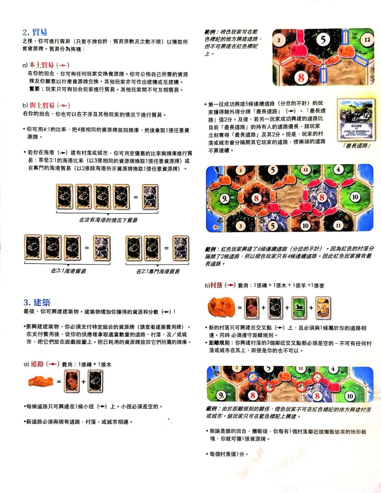
2. 貿易
之後,你可進行貿易(只要乎牌容許,貿易張數及次數不限)以獲取所需資源牌。貿易分為兩種:
a) 本土貿易(→)
在你的回合,你可與任何玩家交換資源牌。你可公佈自己所需的資源牌及你願意以什麼資源牌交換,其他玩家亦可作出建議或反建議。
重要: 玩家只可與回合玩家進行貿易。其他玩家間不可互相貿易。
b) 海上貿易(→)
在你的回合,你也可以在不涉及其他玩家的情況下進行貿易。
- 你可用4:1的比率,把4張相同的資源牌放回牌庫,然後拿取1張任意資源牌。
- 若你在海港(→)建有村落或城市,你可用更優惠的比率與牌庫進行貿易:享受3:1的海港比率(以3張相同的資源牌換取1張任意資源牌)或在專門的海港貿易(以2張該海港所示資源牌換取1張任意資源牌)。
〔圖〕卡牌交易示意
〔圖注〕在沒有海港的情況下貿易
〔圖〕卡牌交易示意
〔圖注〕在3:1海港貿易
〔圖〕卡牌交易示意
〔圖注〕在2:1專門海港貿易
3. 建築
最後,你可興建建築物。建築物增加你獲得的資源和分數(→)!
- 要興建建築物,你必須支付特定組合的資源牌(請查看建築費用牌)。在支付費用後,從你的供應堆拿取適當數量的道路、村落,及/或城市,把它們放在遊戲版圖上。把已耗用的資源牌放回它們所屬的牌庫。
a) 道路(→)費用:1張磚 + 1張木
- 每條道路只可興建在1條小徑(→)上。小徑必須是空的。
- 新道路必須與現有道路,村落,或城市相連。
範例: 橙色玩家可在藍色標記的地方興建道路,但不可興建在紅色標記上。
〔圖〕版圖截圖;圖中數字標記:2 5 12 8
- 第一位成功興建5條連續道路(分岔的不計)的玩家獲得額外得分牌「最長道路」(→)。「最長道路」值2分。及後,若另一玩家成功興建的道路比目前「最長道路」的持有人的道路還長,該玩家立刻奪得「最長道路」及其2分。但是,玩家的村落或城市會分隔開其它玩家的道路,使兩端的道路不算連續。
〔圖〕「最長道路」卡;卡面文字:最長道路 2分,內文小字〔?……?〕
〔圖注〕/最長道路/
〔圖〕版圖截圖;圖中數字標記:2 5 12 4 9 8 8 10 3 5 10 11
範例: 紅色玩家興建了6條連續道路(分岔的不計)。因為紅色的村落分隔開了2條道路,所以橙色玩家只有4條連續道路。因此紅色玩家擁有最長道路。
b) 村落(→)費用:1張磚 + 1張木 + 1張羊 +1張麥
- 新的村落只可興建在交叉點(→)上,且必須與1條屬於你的道路相連。同時 必須遵守距離規則。
- 距離規則: 你興建村落的3個鄰近交叉點都必須是空的 – 不可有任何村落或城市在其上,即使是你的也不可以。
〔圖〕版圖截圖;圖中數字標記:2 5 12 4 9 8 8 10
範例: 由於距離規則的關係,橙色玩家不可在紅色標記的地方興建村落或城市。該玩家只可在藍色標記上興建。
- 無論是誰的回合,擲骰後,你每有1個村落鄰近該擲骰結果的地形板塊,你就可獲1張資源牌。
- 每個村落值1分。
〔无〕
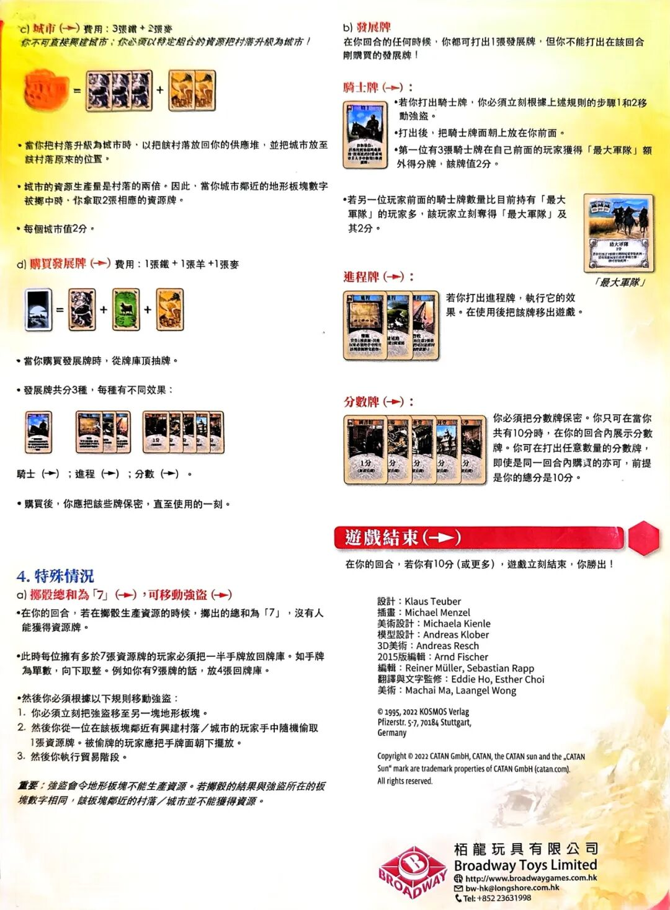
c) 城市(→)費用:3張礦 + 2張麥
你不可直接興建城市;你必須以特定組合的資源把村落升級為城市!
- 當你把村落升級為城市時,以把該村落放回你的供應堆,並把城市放至該村落原來的位置。
- 城市的資源生產量是村落的兩倍。因此,當你城市鄰近的地形板塊數字被擲中時,你拿取2張相應的資源牌。
- 每個城市值2分。
d) 購買發展牌(→)費用:1張鐵 + 1張羊 +1張麥
- 當你購買發展牌時,從牌庫頂抽牌。
- 發展牌共分3種,每種有不同效果:
〔圖〕三組發展牌卡圖(騎士牌、進程牌、分數牌);卡面小字〔?……?〕
騎士(→);進程(→);分數(→)。
- 購買後,你應把該些牌保密,直至使用的一刻。
4. 特殊情況
a) 擲骰總和為「7」(→),可移動強盜(→)
- 在你的回合,若在擲骰生產資源的時候,擲出的總和為「7」,沒有人能獲得資源牌。
- 此時每位擁有多於7張資源牌的玩家必須把一半手牌放回牌庫。如手牌為單數,向下取整。例如你有9張牌的話,放4張回牌庫。
- 然後你必須根據以下規則移動強盜:
1. 你必須立刻把強盜移至另一塊地形板塊。
2. 然後你從一位在該板塊鄰近有興建村落/城市的玩家手中隨機偷取1張資源牌。被偷牌的玩家應把手牌面朝下擺放。
3. 然後你執行貿易階段。
重要: 強盜會令地形板塊不能生產資源。若擲骰的結果與強盜所在的板塊數字相同,該板塊鄰近的村落/城市並不能獲得資源。
b) 發展牌
在你回合的任何時候,你都可打出1張發展牌,但你不能打出在該回合剛購買的發展牌!
#### 騎士牌(→):
〔圖〕騎士牌卡圖;卡面標題「騎士」,內文小字〔?……?〕
- 若你打出騎士牌,你必須立刻根據上述規則的步驟1和2移動強盜。
- 打出後,把騎士牌面朝上放在你前面。
- 第一位有3張騎士牌在自己前面的玩家獲得「最大軍隊」額外得分牌,該牌值2分。
- 若另一位玩家前面的騎士牌數量比目前持有「最大軍隊」的玩家多,該玩家立刻奪得「最大軍隊」及其2分。
〔圖〕「最大軍隊」卡;卡面文字:最大軍隊 2分,內文小字〔?……?〕
〔圖注〕/最大軍隊/
#### 進程牌(→):
〔圖〕三張進程牌卡圖;卡面標題及內文小字〔?……?〕
若你打出進程牌,執行它的效果。在使用後把該牌移出遊戲。
#### 分數牌(→):
〔圖〕五張分數牌卡圖;卡面標示「1分」「分」「分」「分」「分」及括注小字〔?……?〕
你必須把分數牌保密。你只可在當你共有10分時,在你的回合內展示分數牌。你可在打出任意數量的分數牌,即使是同一回合內購買的亦可,前提是你的總分是10分。
遊戲結束(→)
在你的回合,若你有10分(或更多),遊戲立刻結束,你勝出!
設計:Klaus Teuber
插畫:Michael Menzel
美術設計:Michaela Kienle
模型設計:Andreas Klober
3D美術:Andreas Resch
2015版編輯:Arnd Fischer
編輯:Reiner Müller, Sebastian Rapp
翻譯與文字監修:Eddie Ho, Esther Choi
美術:Machai Ma, Laangel Wong
© 1995, 2022 KOSMOS Verlag
Pfizerstr. 5-7, 70184 Stuttgart,
Germany
Copyright © 2022 CATAN GmbH, CATAN, the CATAN sun and the „CATAN Sun“ mark are trademark properties of CATAN GmbH (catan.com).
All rights reserved.
栢龍玩具有限公司
Broadway Toys Limited
http://www.broadwaygames.com.hk
bw-hk@longshore.com.hk
Tel: +852 23631998
〔无〕
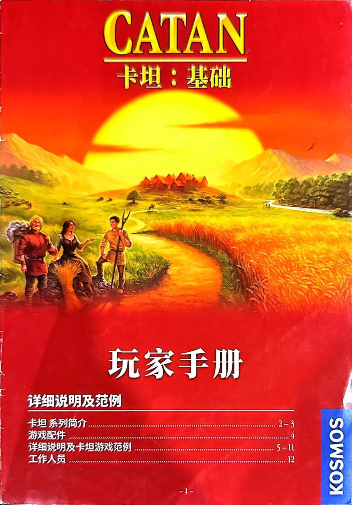
# CATAN®
# 卡坦：基础
# 玩家手册
详细说明及范例
卡坦 系列简介 …………………………… 2-3
游戏配件 …………………………… 4
详细说明及卡坦游戏范例 …………………………… 5-11
工作人员 …………………………… 12
KOSMOS
〔1〕
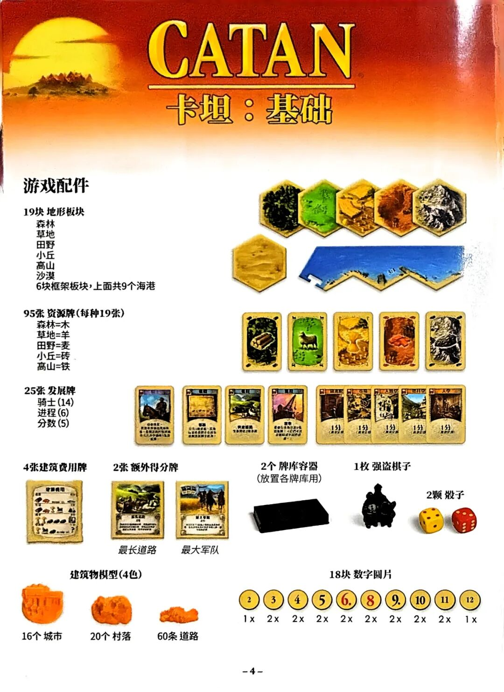
# CATAN®
# 卡坦：基础
游戏配件
19块 地形板块
森林
草地
田野
小丘
高山
沙漠
6块框架板块，上面共9个海港
95张 资源牌(每种19张)
森林=木
草地=羊
田野=麦
小丘=砖
高山=铁
25张 发展牌
骑士(14)
进程(6)
分数(5)
4张建筑费用牌
2张 额外得分牌
最长道路
最大军队
2个 牌库容器
(放置各牌库用)
1枚 强盗棋子
2颗 骰子
建筑物模型(4色)
16个 城市
20个 村落
60条 道路
18块 数字圆片
| 2 | 3 | 4 | 5 | 6. | 8 | 9. | 10 | 11 | 12 |
| 1x | 2x | 2x | 2x | 2x | 2x | 2x | 2x | 2x | 1x |
〔4〕
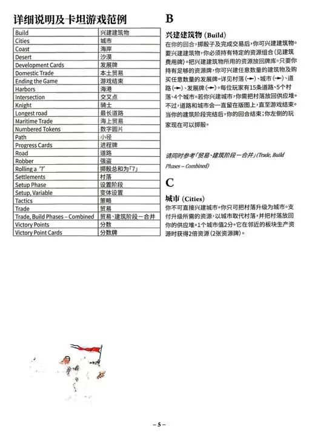
详细说明及卡坦游戏范例
| Build | 兴建建筑物 |
| Cities | 城市 |
| Coast | 海岸 |
| Desert | 沙漠 |
| Development Cards | 发展牌 |
| Domestic Trade | 本土贸易 |
| Ending the Game | 游戏结束 |
| Harbors | 海港 |
| Intersection | 交叉点 |
| Knight | 骑士 |
| Longest road | 最长道路 |
| Maritime Trade | 海上贸易 |
| Numbered Tokens | 数字圆片 |
| Path | 小径 |
| Progress Cards | 进程牌 |
| Road | 道路 |
| Robber | 强盗 |
| Rolling a "7" | 掷骰总和为「7」 |
| Settlements | 村落 |
| Setup Phase | 设置阶段 |
| Setup, Variable | 变体设置 |
| Tactics | 策略 |
| Trade | 贸易 |
| Trade, Build Phases – Combined | 贸易、建筑阶段—合并 |
| Victory Points | 分数 |
| Victory Point Cards | 分数牌 |
B
兴建建筑物 (Build)
在你的回合,掷骰子及完成交易后,你可兴建建筑物。要兴建建筑物,你必须持有特定的资源组合(见建筑费用牌)。把兴建建筑物所用的资源放回牌库。只要你持有足够的资源牌,你可兴建任意数量的建筑物及购买任意数量的发展牌。详见村落 (→)、城市 (→)、道路 (→)、发展牌 (→)。每位玩家有15条道路、5个村落、4个城市。若你兴建城市,你需把村落放回供应堆。不过,道路和城市会一直留在版图上,直至游戏结束。当你的建筑阶段完结后,你的回合结束;你左侧的玩家现在可以掷骰。
请同时参考「贸易、建筑阶段—合并」(Trade, Build Phases – Combined)
C
城市 (Cities)
你不可直接兴建城市。你只可把村落升级为城市。支付升级所需的资源,以城市取代村落,并把村落放回你的供应堆。1个城市值2分。它在邻近的板块生产资源时获得2倍资源(2张资源牌)。
〔5〕
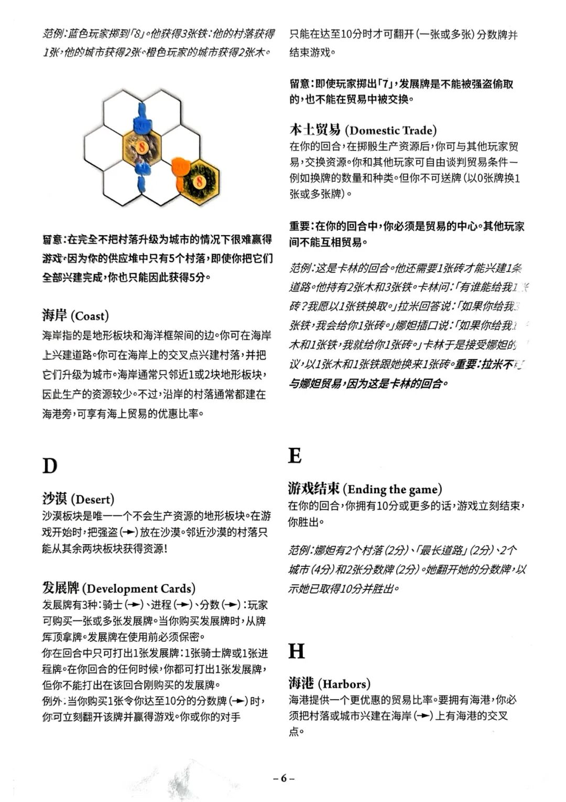
范例:蓝色玩家掷到「8」。他获得3张铁:他的村落获得1张,他的城市获得2张。橙色玩家的城市获得2张木。
插图标注:8、8
留意:在不把村落升级为城市的情况下很难赢得游戏,因为你的供应堆中只有5个村落,即使你把它们全部兴建完成,你也只能因此获得5分。
海岸 (Coast)
海岸指的是地形板块和海洋框架间的边。你可在海岸上兴建道路。你可在海岸上的交叉点兴建村落,并把它们升级为城市。海岸通常只邻近1或2块地形板块,因此生产的资源较少。不过,沿岸的村落通常都建在海港旁,可享有海上贸易的优惠比率。
D
沙漠 (Desert)
沙漠板块是唯一一个不会生产资源的地形板块。在游戏开始时,把强盗 (→) 放在沙漠。邻近沙漠的村落只能从其余两块板块获得资源!
发展牌 (Development Cards)
发展牌有3种:骑士 (→)、进程 (→)、分数 (→):玩家可购买一张或多张发展牌。当你购买发展牌时,从牌库顶拿牌。发展牌在使用前必须保密。你在回合中只可打出1张发展牌:1张骑士牌或1张进程牌。在你回合的任何时候,你都可打出1张发展牌,但你不能打出在该回合刚购买的发展牌。例外:当你购买1张令你达至10分的分数牌 (→) 时,你可立刻翻开该牌并赢得游戏。你或你的对手只能在达至10分时才可翻开 (一张或多张) 分数牌并结束游戏。
留意:即使玩家掷出「7」,发展牌是不能被强盗偷取的,也不能在贸易中被交换。
本土贸易 (Domestic Trade)
在你的回合,在掷骰生产资源后,你可与其他玩家贸易,交换资源。你和其他玩家可自由谈判贸易条件—例如换牌的数量和种类。但你不可送牌 (以0张牌换1张或多张牌)。
重要:在你的回合中,你必须是贸易的中心。其他玩家间不能互相贸易。
范例:这是卡林的回合。他还需要1张砖才能兴建1条道路。他持有2张木和3张铁。卡林问:「有谁能给我1〔?〕砖?我愿以1张铁换取。」拉米回答说:「如果你给我3〔?〕张铁,我会给你1张砖。」娜妲插口说:「如果你给我1〔?〕木和1张铁,我就给你1张砖。」卡林于是接受娜妲的〔?〕议,以1张木和1张铁跟她换来1张砖。 重要:拉米不〔?〕与娜妲贸易,因为这是卡林的回合。
E
游戏结束 (Ending the game)
在你的回合,你拥有10分或更多的话,游戏立刻结束,你胜出。
范例:娜妲有2个村落 (2分)、「最长道路」 (2分)、2个城市 (4分)和2张分数牌 (2分)。她翻开她的分数牌,以示她已取得10分并胜出。
H
海港 (Harbors)
海港提供一个更优惠的贸易比率。要拥有海港,你必须把村落或城市兴建在海岸 (→) 上有海港的交叉点。
〔6〕
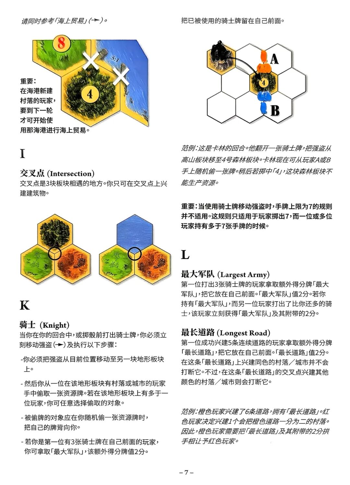
请同时参考「海上贸易」(➔)。
〔插图〕8、4、3:1、✕、✕
重要:在海港新建村落的玩家,要到下一轮才可开始使用那海港进行海上贸易。
I
交叉点 (Intersection)
交叉点是3块板块相遇的地方。你只可在交叉点上兴建建筑物。
〔插图,无标注文字〕
K
骑士 (Knight)
当你在你的回合中,或掷骰前打出骑士牌,你必须立刻移动强盗(➔)及执行以下步骤:
-你必须把强盗从目前位置移动至另一块地形板块上。
-然后你从一位在该地形板块有村落或城市的玩家手中偷取一张资源牌。若在该地形板块上有多于一位玩家,你可任意选择偷取的对象。
-被偷牌的对象应在你随机偷一张资源牌时,把自己的牌背向你。
-若你是第一位有3张骑士牌在自己前面的玩家,你可拿取「最大军队」,该额外得分牌值2分。
把已被使用的骑士牌留在自己前面。
〔插图〕A、B、4
范例:这是卡林的回合。他翻开一张骑士牌,把强盗从高山板块移至4号森林板块。卡林现在可从玩家A或B手上随机偷一张牌。稍后若掷中「4」,这块森林板块不能生产资源。
重要:当使用骑士牌移动强盗时,手牌上限为7的规则并不适用。这规则只适用于玩家掷出7,而一位或多位玩家持有多于7张手牌的时候。
L
最大军队 (Largest Army)
第一位打出3张骑士牌的玩家拿取额外得分牌「最大军队」,把它放在自己前面。「最大军队」值2分。若你持有「最大军队」,而另一位玩家打出了比你还多的骑士,该玩家立刻获得「最大军队」及其附带的2分。
最长道路 (Longest Road)
第一位成功兴建5条连续道路的玩家拿取额外得分牌「最长道路」,把它放在自己前面。「最长道路」值2分。在这条「最长道路」上兴建同色的村落/城市并不会打断它。不过,在这条「最长道路」的交叉点兴建其他颜色的村落/城市则会打断它。
范例:橙色玩家兴建了6条道路,拥有「最长道路」。红色玩家决定兴建1个会把橙色道路一分为二的村落。因此,橙色玩家需要把「最长道路」及其附带的2分拱手相让予红色玩家。
〔7〕
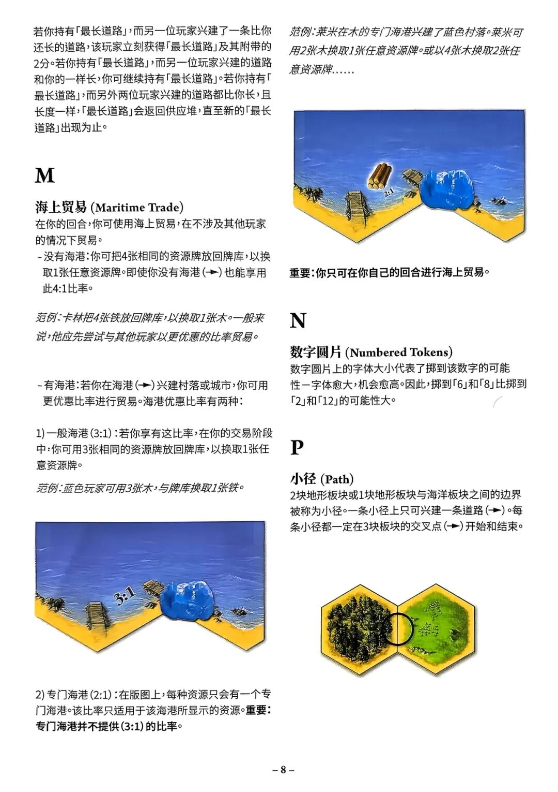
若你持有「最长道路」,而另一位玩家兴建了一条比你还长的道路,该玩家立刻获得「最长道路」及其附带的2分。若你持有「最长道路」,而另一位玩家兴建的道路和你的一样长,你可继续持有「最长道路」。若你持有「最长道路」,而另外两位玩家兴建的道路都比你长,且长度一样,「最长道路」会返回供应堆,直至新的「最长道路」出现为止。
M
海上贸易 (Maritime Trade)
在你的回合,你可使用海上贸易,在不涉及其他玩家的情况下贸易,
-没有海港:你可把4张相同的资源牌放回牌库,以换取1张任意资源牌。即使你没有海港(➔)也能享用此4:1比率。
范例:卡林把4张铁放回牌库,以换取1张木。一般来说,他应先尝试与其他玩家以更优惠的比率贸易。
-有海港:若你在海港(➔)兴建村落或城市,你可用更优惠比率进行贸易。海港优惠比率有两种:
1) 一般海港(3:1):若你享有这比率,在你的交易阶段中,你可用3张相同的资源牌放回牌库,以换取1张任意资源牌。
范例:蓝色玩家可用3张木,与牌库换取1张铁。
〔插图〕3:1
2) 专门海港(2:1):在版图上,每种资源只会有一个专门海港。该比率只适用于该海港所显示的资源。重要:专门海港并不提供(3:1)的比率。
范例:莱米在木的专门海港兴建了蓝色村落。莱米可用2张木换取1张任意资源牌。或以4张木换取2张任意资源牌……
〔插图〕2:1
重要:你只可在你自己的回合进行海上贸易。
N
数字圆片 (Numbered Tokens)
数字圆片上的字体大小代表掷到该数字的可能性—字体愈大,机会愈高。因此,掷到「6」和「8」比掷到「2」和「12」的可能性大。
P
小径 (Path)
2块地形板块或1块地形板块与海洋板块之间的边界被称为小径。一条小径上只可兴建一条道路(➔)。每条小径都一定在3块板块的交叉点(➔)开始和结束。
〔插图,无标注文字〕
〔8〕
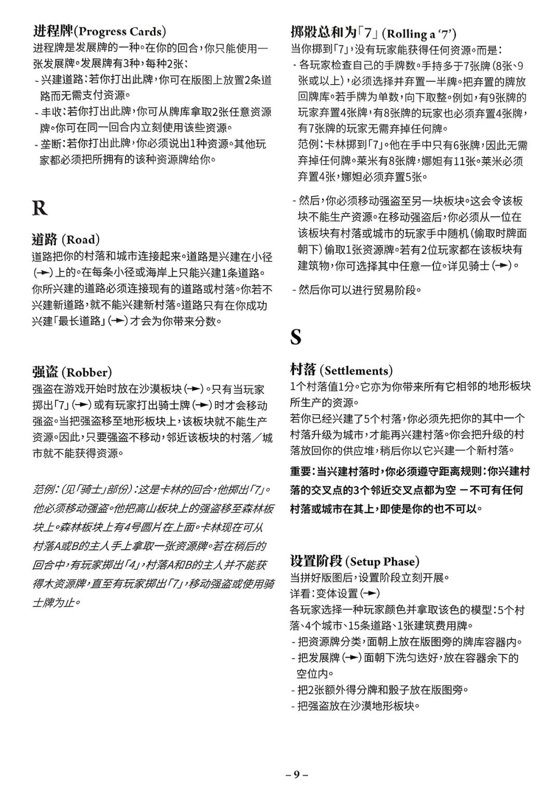
进程牌(Progress Cards)
进程牌是发展牌的一种。在你的回合，你只能使用一张发展牌。发展牌有3种，每种2张：
- 兴建道路：若你打出此牌，你可在版图上放置2条道路而无需支付资源。
- 丰收：若你打出此牌，你可从牌库拿取2张任意资源牌。你可在同一回合内立刻使用这些资源。
- 垄断：若你打出此牌，你必须说出1种资源。其他玩家都必须把所拥有的该种资源牌给你。
R
道路 (Road)
道路把你的村落和城市连接起来。道路是兴建在小径(→)上的。在每条小径或海岸上只能兴建1条道路。你所兴建的道路必须连接现有的道路或村落。你若不兴建新道路，就不能兴建新村落。道路只有在你成功兴建「最长道路」(→)才会为你带来分数。
强盗 (Robber)
强盗在游戏开始时放在沙漠板块(→)。只有当玩家掷出「7」(→)或有玩家打出骑士牌(→)时才会移动强盗。当把强盗移至地形板块上，该板块就不能生产资源。因此，只要强盗不移动，邻近该板块的村落/城市就不能获得资源。
范例：(见「骑士」部份)：这是卡林的回合，他掷出「7」。他必须移动强盗。他把高山板块上的强盗移至森林板块上。森林板块上有4号圆片在上面。卡林现在可从村落A或B的主人手上拿取一张资源牌。若在稍后的回合中，有玩家掷出「4」，村落A和B的主人并不能获得木资源牌，直至有玩家掷出「7」，移动强盗或使用骑士牌为止。
掷骰总和为「7」(Rolling a ‘7’)
当你掷到「7」，没有玩家能获得任何资源。而是：
- 各玩家检查自己的手牌数。手持多于7张牌(8张、9张或以上)，必须选择并弃置一半牌。把弃置的牌放回牌库。若手牌为单数，向下取整。例如，有9张牌的玩家弃置4张牌，有8张牌的玩家也必须弃置4张牌，有7张牌的玩家无需弃掉任何牌。
范例：卡林掷到「7」。他在手中只有6张牌，因此无需弃掉任何牌。莱米有8张牌，娜姐有11张。莱米必须弃置4张，娜姐必须弃置5张。
- 然后，你必须移动强盗至另一块板块。这会令该板块不能生产资源。在移动强盗后，你必须从一位在该板块有村落或城市的玩家手中随机(偷取时牌面朝下)偷取1张资源牌。若有2位玩家都在该板块有建筑物，你可选择其中任意一位。详见骑士(→)。
- 然后你可以进行贸易阶段。
S
村落 (Settlements)
1个村落值1分。它亦为你带来所有它相邻的地形板块所生产的资源。
若你已经兴建了5个村落，你必须先把你的其中一个村落升级为城市，才能再兴建村落。你会把升级的村落放回你的供应堆，稍后你以它兴建一个新村落。
重要：当兴建村落时，你必须遵守距离规则：你兴建村落的交叉点的3个邻近交叉点都为空 —不可有任何村落或城市在其上，即使是你的也不可以。
设置阶段 (Setup Phase)
当拼好版图后，设置阶段立刻开展。
详看：变体设置(→)
各玩家选择一种玩家颜色并拿取该颜色的模型：5个村落、4个城市、15条道路、1张建筑费用牌。
- 把资源牌分类，面朝上放在版图旁的牌库容器内。
- 把发展牌(→)面朝下洗匀迭好，放在容器余下的空位内。
- 把2张额外得分牌和骰子放在版图旁。
- 把强盗放在沙漠地形板块。
〔9〕
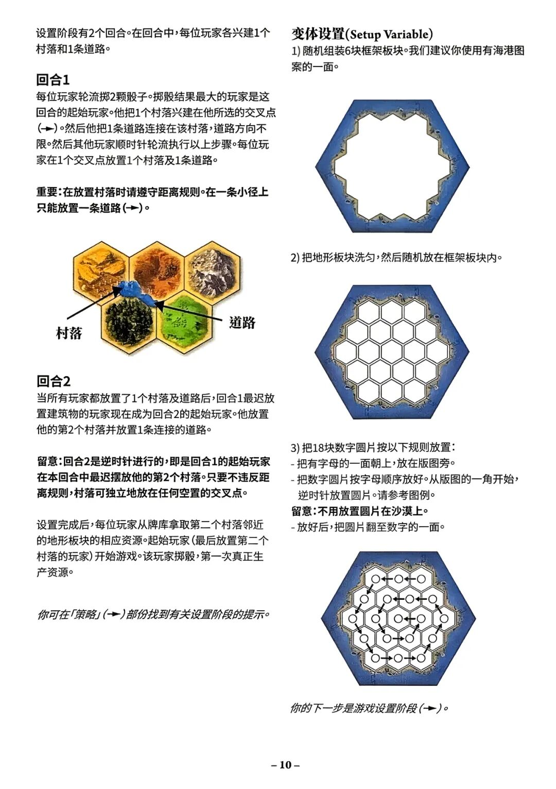
设置阶段有2个回合。在回合中，每位玩家各兴建1个村落和1条道路。
回合1
每位玩家轮流掷2颗骰子。掷骰结果最大的玩家是这回合的起始玩家。他把1个村落兴建在他所选择的交叉点(→)。然后他把1条道路连接在该村落，道路方向不限。然后其他玩家顺时针轮流执行以上步骤。每位玩家在1个交叉点放置1个村落及1条道路。
重要：在放置村落时请遵守距离规则。在一条小径上只能放置一条道路(→)。
村落
道路
回合2
当所有玩家都放置了1个村落及道路后，回合1最迟放置建筑物的玩家现在成为回合2的起始玩家。他放置他的第2个村落并放置1条连接的道路。
留意：回合2是逆时针进行的，即是回合1的起始玩家在本回合中最迟摆放他的第2个村落。只要不违反距离规则，村落可独立地放在任何空置的交叉点。
设置完成后，每位玩家从牌库拿取第二个村落邻近的地形板块的相应资源。起始玩家(最后放置第二个村落的玩家)开始游戏。该玩家掷骰，第一次真正生产资源。
你可在「策略」(→)部份找到有关设置阶段的提示。
变体设置(Setup Variable)
1) 随机组装6块框架板块。我们建议你使用有海港图案的一面。
2) 把地形板块洗匀，然后随机放在框架板块内。
3) 把18块数字圆片按以下规则放置：
- 把有字母的一面朝上，放在版图旁。
- 把数字圆片按字母顺序放好。从版图的一角开始，逆时针放置圆片。请参考图例。
留意：不用放置圆片在沙漠上。
- 放好后，把圆片翻至数字的一面。
你的下一步是游戏设置阶段(→)。
〔10〕
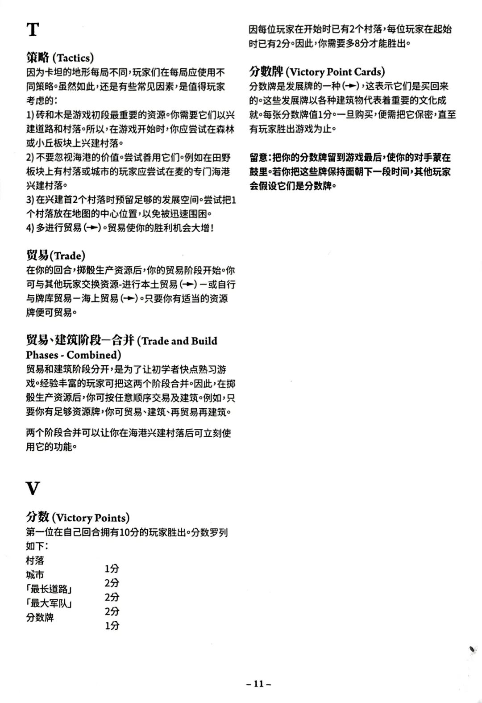
T
策略 (Tactics)
因为卡坦的地形每局不同,玩家们在每局应使用不同策略。虽然如此,还是有些常见因素,是值得玩家考虑的:
1) 砖和木是游戏初段最重要的资源。你需要它们以兴建道路和村落。所以,在游戏开始时,你应尝试在森林或小丘板块上兴建村落。
2) 不要忽视海港的价值。尝试善用它们。例如在田野板块上有村落或城市的玩家应尝试在麦的专门海港兴建村落。
3) 在兴建首2个村落时预留足够的发展空间。尝试把1个村落放在地图的中心位置,以免被迅速围困。
4) 多进行贸易 (➔)。贸易使你的胜利机会大增!
贸易 (Trade)
在你的回合,掷骰生产资源后,你的贸易阶段开始。你可与其他玩家交换资源-进行本土贸易 (➔) — 或自行与牌库贸易 — 海上贸易 (➔)。只要你有适当的资源牌便可贸易。
贸易、建筑阶段—合并 (Trade and Build Phases - Combined)
贸易和建筑阶段分开,是为了让初学者快点熟习游戏。经验丰富的玩家可把这两个阶段合并。因此,在掷骰生产资源后,你可按任意顺序交易及建筑。例如,只要你有足够资源牌,你可贸易、建筑、再贸易再建筑。
两个阶段合并可以让你在海港兴建村落后可立刻使用它的功能。
V
分数 (Victory Points)
第一位在自己回合拥有10分的玩家胜出。分数罗列如下:
| 村落 | 1分 |
| 城市 | 2分 |
| 「最长道路」 | 2分 |
| 「最大军队」 | 2分 |
| 分数牌 | 1分 |
因每位玩家在开始时已有2个村落,每位玩家在起始时已有2分。因此,你需要多8分才能胜出。
分数牌 (Victory Point Cards)
分数牌是发展牌的一种 (➔),这表示它们是买回来的。这些发展牌以各种建筑物代表着重要的文化成就。每张分数牌值1分。一旦购买,便需把它保密,直至有玩家胜出游戏为止。
留意:把你的分数牌留到游戏最后,使你的对手蒙在鼓里。若你把这些牌保持面朝下一段时间,其他玩家会假设它们是分数牌。
〔11〕
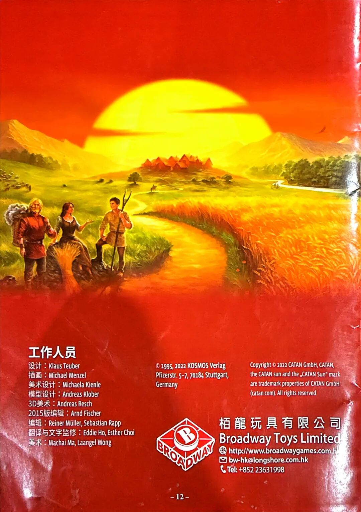
工作人员
设计:Klaus Teuber
插画:Michael Menzel
美术设计:Michaela Kienle
模型设计:Andreas Klober
3D美术:Andreas Resch
2015版编辑:Arnd Fischer
编辑:Reiner Müller, Sebastian Rapp
翻译与文字监修:Eddie Ho, Esther Choi
美术:Machai Ma, Laangel Wong
© 1995, 2022 KOSMOS Verlag
Pfizerstr. 5-7, 70184 Stuttgart,
Germany
Copyright © 2022 CATAN GmbH, CATAN, the CATAN sun and the „CATAN Sun" mark are trademark properties of CATAN GmbH (catan.com). All rights reserved.
栢龍玩具有限公司
Broadway Toys Limited
http://www.broadwaygames.com.h〔?〕
bw-hk@longshore.com.hk
Tel: +852 23631998
〔12〕